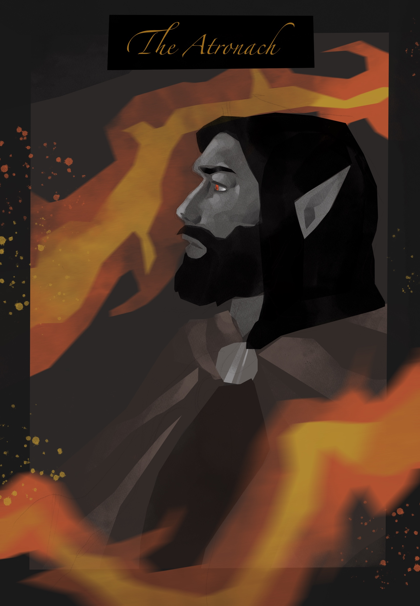

The Atronach
Born in the ashlands, beneath the stars of the Atronach, to parents whose names he no longer remembers, Steve was taken from Morrowind at a young age and raised within the confines of the Imperial City.
His Dunmer constitution and Atronach blessing proved to be a rare and powerful combination, granting him a natural talent for Destruction magic. Too far removed from the culture he once knew, Steve joined the Imperial Legion once he came of age, eventually rising to the station of Legion battlemage.
His service to the Empire coupled with his magical abilities brought him beneath the scrutiny of the Blades, who in 3E389, recruited Steve into their ranks, as a witchhunter.
He does not know where his name comes from, or if it is even his original name at all